Депрессия: 10 признаков, что делать и когда идти к врачу
Обновлено: 29.07.2026 · 16 минут чтения
Депрессия — это не плохое настроение и не слабость характера, а состояние, при котором сниженное настроение или потеря интереса к жизни держатся почти каждый день не меньше двух недель и мешают работать, общаться и заботиться о себе. Главное, что важно знать сразу: депрессия хорошо изучена и поддаётся лечению — но «взять себя в руки» усилием воли при ней не получается, и это не ваша вина. Ниже — как отличить депрессию от усталости, выгорания и апатии, по каким признакам её узнают, что делать при депрессии прямо сейчас и в какой момент нужна помощь врача.
- Что такое депрессия и чем она отличается от грусти
- Признаки депрессии: 10 симптомов
- Депрессия, выгорание или апатия: как отличить
- Экспресс-проверка: похоже ли это на депрессию
- Виды депрессии и у кого она проявляется иначе
- Причины депрессии: почему она возникает
- Что делать при депрессии: 8 шагов
- Упражнение «минимальный шаг» и план на неделю
- Как лечат депрессию: психотерапия и лекарства
- Как помочь близкому с депрессией
- Мифы о депрессии
- Что не помогает и что затягивает состояние
- Когда обращаться к врачу — и когда срочно
- Частые вопросы
Что такое депрессия и чем она отличается от грусти
Депрессия — это расстройство, при котором стойко снижены настроение, интерес к жизни и уровень энергии, и это состояние сохраняется большую часть дня почти каждый день не меньше двух недель. Ключевое отличие от обычной грусти — не сила переживания, а его устойчивость и охват: страдает не одна сфера, а всё сразу — сон, аппетит, мышление, отношение к себе, способность радоваться.
Грусть — нормальная человеческая эмоция, у неё есть причина и есть «дно», после которого становится легче. Печаль после потери или неудачи может быть очень сильной, но внутри неё сохраняется способность откликаться на тепло, шутку, хорошую новость. При депрессии этот отклик глушится: приятное перестаёт быть приятным, а близкие звучат будто через стекло.
| Признак | Плохое настроение и грусть | Депрессия |
|---|---|---|
| Длительность | Часы или несколько дней, меняется в течение дня | Больше двух недель, почти каждый день |
| Реакция на хорошее | Сохраняется: приятное радует | Приглушена: не радует почти ничего |
| Силы и тело | Обычно в норме | Упадок сил, сон и аппетит нарушены |
| Отношение к себе | «Мне сейчас тяжело» | «Я плохой, я обуза, всё бессмысленно» |
| Жизнь и дела | Работаете и общаетесь как обычно | Заметно страдают работа, учёба, отношения |
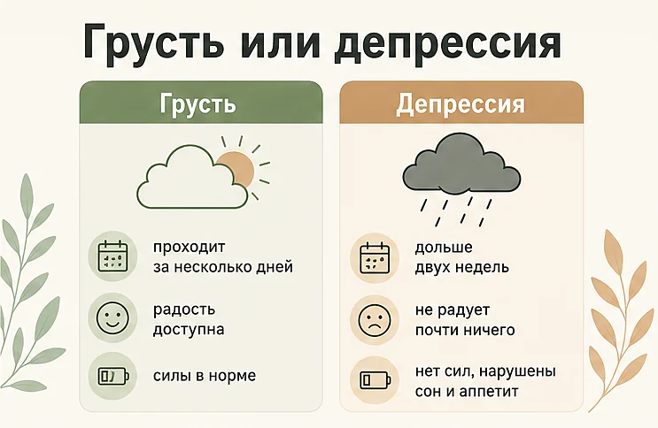
По оценке Всемирной организации здравоохранения, депрессией страдают около 5,7% взрослых — примерно 332 миллиона человек в мире. У женщин она встречается примерно в 1,5 раза чаще, чем у мужчин (6,9% против 4,6%). Это одно из самых распространённых состояний на планете — и при этом в странах с высоким доходом лечение получает лишь около трети людей с депрессией. Чаще всего не потому, что помощь недоступна, а потому что человек считает своё состояние «характером» или «просто усталостью».
Признаки депрессии: 10 симптомов
Симптомы депрессии почти никогда не сводятся к слезам и грусти. Чаще это набор из нескольких признаков, которые держатся вместе больше двух недель.
- Сниженное настроение большую часть дня. Не обязательно печаль — часто это ощущение пустоты, серости, «плоскости» и отсутствия чувств вообще.
- Потеря интереса и удовольствия. То, что раньше радовало — музыка, работа, встречи, секс, еда, — перестаёт вызывать отклик. Это один из двух ключевых симптомов депрессии.
- Упадок сил. Усталость не проходит после сна и отдыха, а простые дела вроде душа или посуды требуют непропорционально больших усилий.
- Нарушения сна. Трудно заснуть, ночные пробуждения или, наоборот, сон по 10–12 часов без чувства отдыха. Характерны ранние пробуждения в 4–5 утра с тяжёлыми мыслями — подробнее в статье про бессонницу.
- Изменения аппетита и веса. Еда «не лезет» или, наоборот, появляется тяга заедать тяжёлое состояние; вес заметно меняется без усилий.
- Трудности с концентрацией и решениями. Мысли вязкие, страница перечитывается по третьему разу, даже мелкий выбор — что съесть, что ответить — становится непосильным.
- Чувство вины и никчёмности. «Я всех подвожу», «я обуза», «я ничего не стою» — при депрессии такие мысли ощущаются как объективная правда, а не как симптом. Как это связано с отношением к себе — в материале про самооценку.
- Замедленность или, наоборот, ажитация. Речь и движения становятся медленнее, либо появляется беспокойство, невозможность усидеть на месте.
- Телесные симптомы. Головные боли, тяжесть в груди, боли в спине и животе, проблемы с пищеварением — при депрессии тело часто «говорит» громче настроения.
- Мысли о смерти. От «лучше бы я не просыпался» и «всем будет легче без меня» до конкретных мыслей о самоубийстве. Это всегда повод обратиться за помощью немедленно.
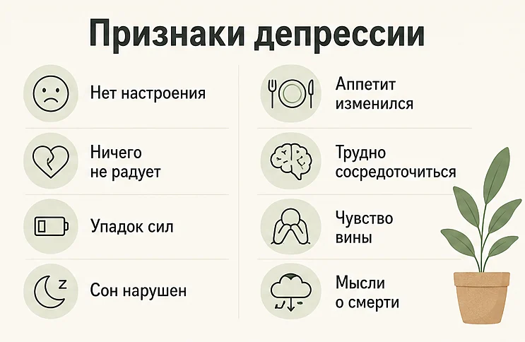
Депрессию подозревают, когда держатся хотя бы один из двух ключевых симптомов — сниженное настроение или потеря интереса — плюс несколько дополнительных, и всё это длится две недели и дольше. Тяжесть состояния (лёгкая, умеренная, тяжёлая) определяет врач: от неё зависит, хватит ли психотерапии или нужна ещё и медикаментозная поддержка.
Депрессия, выгорание или апатия: как отличить
Эти три состояния постоянно путают — и это дорого обходится: при выгорании помогает отдых и изменение нагрузки, а при депрессии отдых сам по себе не работает.
| Выгорание | Апатия | Депрессия | |
|---|---|---|---|
| Где проявляется | Прежде всего в работе и рабочем контексте | В отдельных сферах или во всех сразу | Во всех сферах жизни одновременно |
| Что чувствуется | Истощение, цинизм, «не могу больше» | Безразличие, «ничего не хочется» | Тоска или пустота, «ничего не радует» |
| Отдых | Помогает, в отпуске становится легче | Помогает частично | Почти не помогает |
| Отношение к себе | Обычно сохранное | Обычно сохранное | Вина, самообвинение, ощущение никчёмности |
| Мысли о смерти | Нехарактерны | Нехарактерны | Возможны — красный флаг |
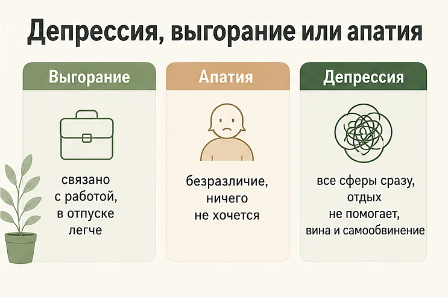
Границы здесь не абсолютные: затянувшееся выгорание может перейти в депрессию, а апатия бывает и самостоятельным состоянием, и симптомом депрессии. Практический ориентир простой: если после настоящего отдыха ничего не меняется, а отношение к себе стало враждебным — речь идёт уже не об усталости.
Экспресс-проверка: похоже ли это на депрессию
Это не диагностика, а способ честно посмотреть на своё состояние. Отметьте, что описывает вас за последние две недели почти каждый день:
- подавленное настроение, тоска или ощущение пустоты;
- потеря интереса и удовольствия от того, что раньше радовало;
- нарушения сна: бессонница, ранние пробуждения или сон без отдыха;
- усталость и упадок сил даже при небольшой нагрузке;
- изменения аппетита или веса;
- трудности с концентрацией, памятью и принятием решений;
- чувство вины, никчёмности, ощущение «я подвожу всех»;
- замедленность или, наоборот, тревожное беспокойство;
- мысли о том, что жить не хочется.
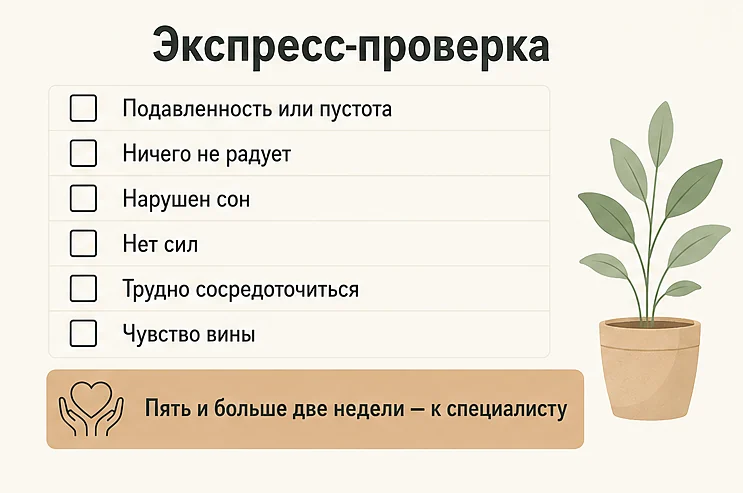
Как читать результат. Если совпадений один-два и они не мешают жить — вероятно, речь об усталости или ситуативной реакции. Пять и больше совпадений, включая хотя бы одно из первых двух, держатся две недели и дольше — это похоже на депрессию, и стоит записаться к специалисту. Отмечен последний пункт — обращайтесь за помощью сразу, не откладывая на «может, само пройдёт».
Такие же вопросы лежат в основе опросников, которые используют врачи (например, PHQ-9). Но опросник не ставит диагноз — он лишь показывает, что состояние заслуживает внимания специалиста.
Виды депрессии и у кого она проявляется иначе
Депрессия неоднородна, и от её формы зависит лечение. Основные варианты, о которых полезно знать:
- Депрессивный эпизод — самый частый вариант: состояние развивается за недели, длится месяцы и при лечении отступает.
- Хроническая депрессия (дистимия) — менее выраженная, но растянутая на годы. Человек привыкает и считает это характером: «я всегда был пессимистом».
- Послеродовая депрессия — по данным ВОЗ, с депрессией сталкивается более 10% беременных и недавно родивших женщин. Это не «капризы» и не недостаток любви к ребёнку, а состояние, требующее помощи.
- Сезонная депрессия — ухудшение осенью и зимой с возвращением сил весной; часто сопровождается сонливостью и тягой к сладкому. Подробно разобрана в статье про осеннюю депрессию.
- Биполярное расстройство — депрессивные эпизоды чередуются с периодами необычно приподнятого настроения и активности. Это важно рассказать врачу: лечение здесь принципиально другое.
Как депрессия выглядит у мужчин, подростков и пожилых
Одно и то же состояние может выглядеть по-разному, и именно поэтому его часто не замечают:
- У мужчин депрессия чаще проявляется раздражительностью, вспышками гнева, уходом в работу, алкоголь или риск — вместо слёз и жалоб. Обратиться за помощью мешает установка «мужчина должен справляться сам».
- У подростков — раздражительностью, замкнутостью, падением успеваемости, жалобами на боли в теле. Родители часто списывают это на переходный возраст.
- У пожилых — жалобами на память, боли и слабость; настроение при этом может почти не упоминаться. По данным ВОЗ, среди людей старше 70 лет депрессия встречается у 5,9%.
Причины депрессии: почему она возникает
У депрессии не бывает одной-единственной причины. Обычно совпадает несколько факторов, и «спусковым крючком» становится последний.
- Биологические. Наследственность, изменения в работе систем мозга, отвечающих за настроение, мотивацию и удовольствие, гормональные сдвиги (щитовидная железа, роды, менопауза), некоторые заболевания и лекарства.
- Психологические. Склонность к самокритике и перфекционизму, привычка подавлять чувства, установка «я должен справляться сам». Сюда же — навязчивые мысли и постоянное мысленное пережёвывание неудач.
- Социальные и жизненные. Утрата близкого, расставание, увольнение, долги, переезд, хронический стресс на работе, одиночество и нехватка поддержки.
- Образ жизни. Хронический недосып, отсутствие движения, алкоголь, изоляция. Сами по себе они депрессию не вызывают, но заметно повышают уязвимость и мешают выходу.
Важно, чего в этом списке нет: слабости, лени и «неправильного мышления». Депрессия случается и с людьми, у которых «всё хорошо», — и это не делает их состояние менее реальным.
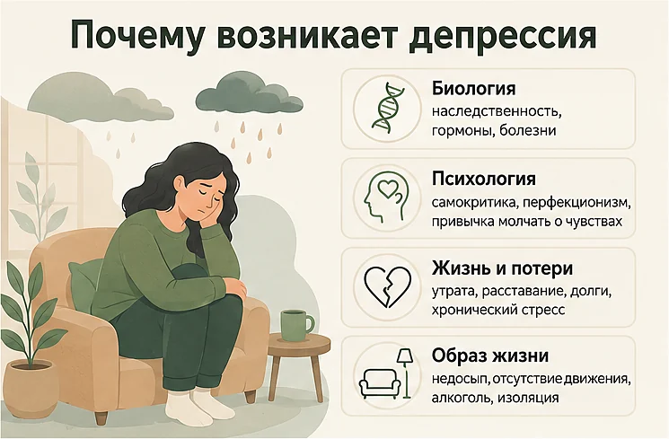
Что делать при депрессии: 8 шагов
Главный принцип: при депрессии действие идёт раньше желания. Ждать, пока появится настроение что-то сделать, бесполезно — обычно всё наоборот: сначала маленькое действие, потом чуть больше сил. Этот подход называется поведенческой активацией и входит в основу когнитивно-поведенческой терапии депрессии.
- Уменьшите шаг до смешного маленького. Не «убраться в квартире», а «убрать одну чашку». Не «пойти на пробежку», а «надеть кроссовки и выйти за дверь». При депрессии обычные задачи весят в разы больше — снижайте планку, пока шаг не станет выполнимым.
- Восстановите режим сна. Подъём в одно и то же время важнее, чем время отхода ко сну. Даже если ночь была плохой, вставайте в привычный час и не ложитесь днём надолго — так организм быстрее собирает ритм обратно.
- Добавьте движение. Регулярная физическая активность — один из немногих способов самопомощи с доказанным эффектом при лёгкой и умеренной депрессии. Начните с 10–15 минут спокойной ходьбы в день, желательно на дневном свету.
- Возвращайте по одному приятному делу в день. Составьте список того, что радовало раньше, и делайте по одному пункту — не дожидаясь, что оно понравится. Сначала будет пресно, отклик возвращается постепенно, и это нормальный ход выздоровления.
- Ешьте и пейте воду по расписанию. При депрессии аппетит подводит, а голод усиливает раздражительность и упадок сил. Три простых приёма пищи по будильнику работают лучше, чем ожидание желания поесть.
- Скажите вслух хотя бы одному человеку. «Мне тяжело, я, кажется, в депрессии» — одна фраза уже снимает часть груза и делает помощь возможной. Изоляция — то, что держит депрессию крепче всего.
- Отложите крупные решения. Уволиться, расстаться, переехать, всё бросить — в депрессивном состоянии мир видится темнее, чем он есть. Если решение можно отложить на несколько недель, отложите.
- Запишитесь к специалисту. Это не последний шаг, а один из первых: чем раньше начинается лечение, тем короче эпизод. Начать можно с психолога или психотерапевта, а при выраженных симптомах — с психиатра.
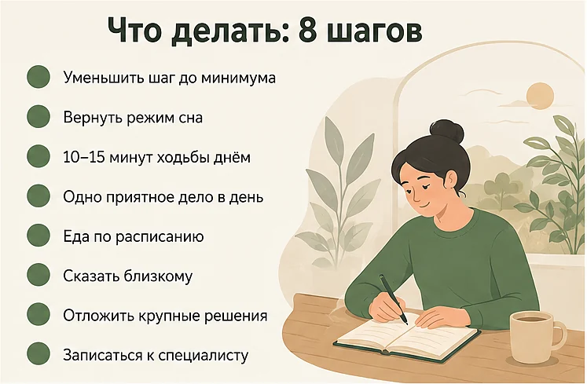
Упражнение «минимальный шаг» и план на неделю
Задача упражнения — не «победить депрессию за неделю», а каждый день делать одно небольшое действие, которое возвращает контакт с жизнью. Отметьте, что реально сделать сегодня:
- встать и открыть шторы, впустить дневной свет;
- выпить стакан воды и умыться;
- выйти на улицу на 10 минут — можно просто вокруг дома;
- написать одному человеку два предложения о том, как дела;
- сделать одно бытовое дело на пять минут (посуда, одна полка, письмо);
- записать три строчки в заметки: что было тяжело, что помогло.
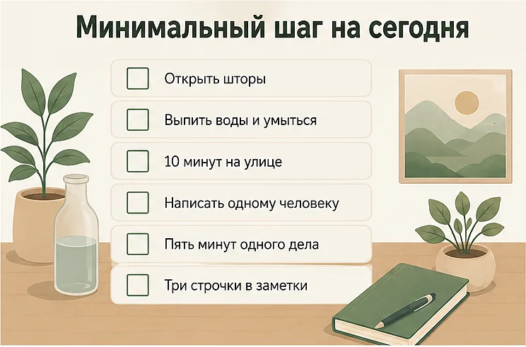
Если сделали хотя бы один пункт — день засчитан. При депрессии это не «мало»: это ровно тот масштаб, на котором состояние начинает сдвигаться.
| День | Минимальный шаг | Зачем |
|---|---|---|
| 1 | Зафиксировать подъём в одно и то же время | Ритм сна — опора для всего остального |
| 2 | 10 минут ходьбы днём, на свету | Движение и свет мягко поднимают уровень энергии |
| 3 | Одно приятное дело из «прошлой жизни» | Возвращать способность чувствовать удовольствие |
| 4 | Рассказать о состоянии одному близкому | Разорвать изоляцию, которая усиливает депрессию |
| 5 | Одно отложенное дело на пять минут | Снизить фон вины и вернуть ощущение опоры |
| 6 | Записаться к специалисту или найти контакты | Перевести решение «надо бы» в конкретное действие |
| 7 | Отметить, что за неделю получилось | Собрать факты против мысли «ничего не меняется» |
Когда нет сил объяснять близким, что с вами, начать можно с разговора без осуждения. ИИ-психолог поможет назвать состояние, разобрать тяжёлые мысли и составить минимальный план на день — анонимно и в любое время. Это не замена лечению: при выраженных симптомах и мыслях о смерти нужна помощь врача, и мы всегда об этом скажем.
Начать разговор бесплатноКак лечат депрессию: психотерапия и лекарства
Депрессия лечится, и в большинстве случаев успешно. Всемирная организация здравоохранения прямо указывает: эффективное лечение существует для лёгкой, умеренной и тяжёлой депрессии. Подход зависит от тяжести состояния.
- Психотерапия. При лёгкой и умеренной депрессии это метод первого выбора. Наиболее изучены когнитивно-поведенческая терапия (работа с мыслями и поведением), поведенческая активация и межличностная терапия. Первые сдвиги обычно заметны в течение нескольких недель.
- Медикаментозное лечение. При умеренной и тяжёлой депрессии врач может назначить антидепрессанты. Они не меняют личность и не создают искусственного веселья: их задача — вернуть сон, силы и способность чувствовать. Эффект оценивают примерно через две-четыре недели, а курс продолжают и после улучшения — чтобы снизить риск возврата.
- Сочетание методов. При выраженной депрессии психотерапия и лекарства обычно работают лучше, чем что-то одно.
- Поддерживающие меры. Режим сна, движение, отказ от алкоголя, поддержка близких — не заменяют лечение, но заметно помогают ему.
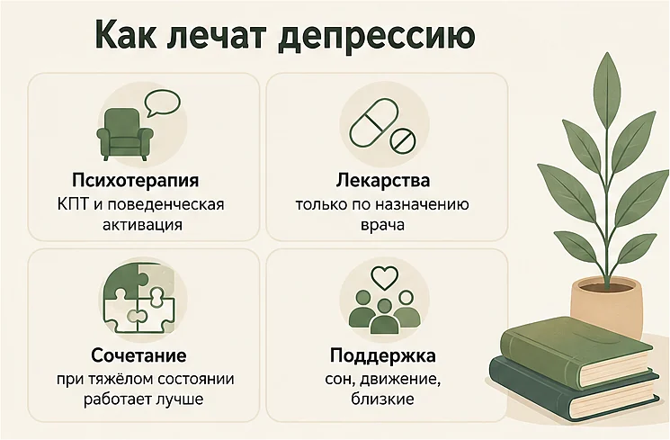
Что важно: подбирать препарат, дозу и длительность может только врач, и так же с ним нужно согласовывать окончание приёма — резкая самостоятельная отмена ухудшает состояние. Если первый специалист или схема не подошли, это не значит, что «ничего не поможет»: подбор лечения — нормальный процесс.
Как помочь близкому с депрессией
Родным часто кажется, что нужно найти правильные слова. На самом деле важнее присутствие и конкретные действия.
- Признайте состояние. «Я вижу, что тебе тяжело, я рядом» — работает. «Соберись», «у других хуже», «просто отвлекись» — нет: это усиливает вину.
- Помогайте делом. Приготовить еду, съездить вместе за продуктами, позвать на прогулку, помочь найти врача и дойти до приёма. При депрессии организационные шаги даются тяжелее всего.
- Не требуйте благодарности и прогресса. Человек может отказываться, отменять планы и не отвечать — это симптом, а не отношение к вам.
- Приглашайте, но не давите. Регулярное «идём гулять?» без обиды на отказ лучше, чем разовое усилие и последующее исчезновение.
- Отнеситесь серьёзно к словам о смерти. Прямой спокойный вопрос «ты думаешь о том, чтобы не жить?» не подталкивает к суициду — он даёт возможность сказать правду и получить помощь.
- Берегите себя. Рядом с депрессией легко выгореть самому. Ваша устойчивость — часть помощи, а не эгоизм.
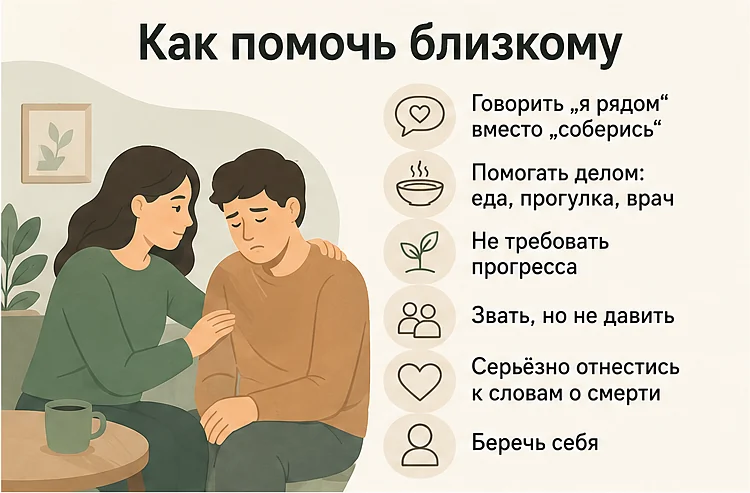
Мифы о депрессии
Мифы — одна из главных причин, по которым люди годами не обращаются за помощью.
- «Депрессия — это лень и слабость». Нет. Это распространённое состояние, при котором меняется работа систем мозга, отвечающих за мотивацию и удовольствие. Волевым усилием оно не снимается — как не снимается волевым усилием высокая температура.
- «Надо просто отвлечься и заняться делом». Отвлечение помогает при грусти, но не при депрессии: там дело не в фокусе внимания, а в нехватке сил и способности чувствовать.
- «У меня нет причин для депрессии». Депрессия бывает и без внешних поводов. Отсутствие «уважительной причины» не отменяет состояния и не означает, что вы притворяетесь.
- «Антидепрессанты меняют личность и вызывают зависимость». Назначенные врачом антидепрессанты не меняют личность и не относятся к наркотическим веществам. Отмену действительно проводят постепенно — но это не то же самое, что зависимость.
- «Если обратиться к психиатру, поставят на учёт и сломают жизнь». Обращение за помощью само по себе не влечёт ограничений; «учёт» — устаревшее представление. Отказ от лечения обходится жизни намного дороже.
- «Депрессия — это навсегда». Депрессивный эпизод заканчивается, а риск повторения снижается, если человек знает свои ранние признаки и получает лечение вовремя.
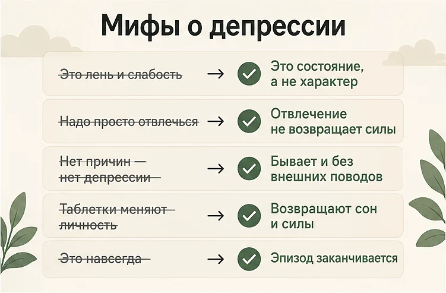
Что не помогает и что затягивает состояние
Некоторые «решения» приносят короткое облегчение и удлиняют эпизод:
- Алкоголь. Самый частый способ «выключиться» на вечер — и самый надёжный способ ухудшить сон, настроение и мотивацию на следующий день.
- Ждать, пока само пройдёт. Иногда проходит — но обычно ценой месяцев тяжёлой жизни и с более высоким риском повторения.
- Полная остановка. Лечь и не делать ничего кажется логичным при упадке сил, но бездействие усиливает депрессию: чем меньше действий, тем меньше сил, и круг замыкается.
- Требовать от себя прежней продуктивности. Планка «как раньше» гарантирует ежедневный провал и добавляет вины. На время болезни планка должна быть другой.
- Бесконечный скроллинг. Лента съедает часы, усиливает сравнение с чужой жизнью и не даёт ни отдыха, ни контакта.
- Скрывать состояние от всех. Изоляция — топливо депрессии. Даже один человек, который знает, что с вами происходит, снижает нагрузку.
- Ставить себе диагнозы и лечиться по интернету. Похожие симптомы дают и заболевания щитовидной железы, и анемия, и побочные эффекты лекарств — поэтому нужен врач, а не самоназначение.
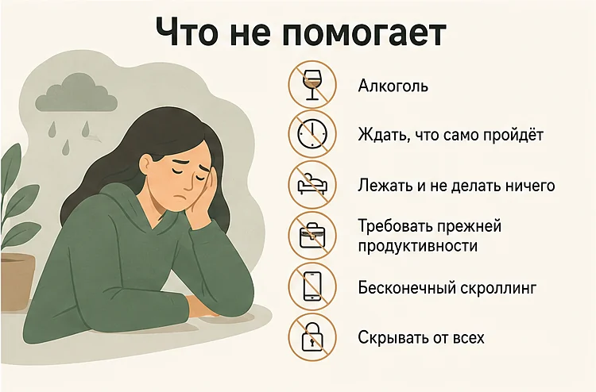
Когда обращаться к врачу — и когда срочно
Плановая консультация нужна, если:
- сниженное настроение или потеря интереса держатся больше двух недель;
- состояние мешает работать, учиться, заботиться о себе и близких;
- нарушен сон или аппетит, есть постоянный упадок сил;
- вы стали избегать людей и всё чаще снимаете тяжесть алкоголем;
- самостоятельные шаги не дают сдвига несколько недель подряд;
- депрессивные эпизоды уже случались раньше.
Немедленно — если появились мысли о самоубийстве, если вы думаете о способе или сроке, если состояние резко ухудшилось, если вы не можете обеспечить себе базовый уход (не едите, не встаёте несколько дней), а также при депрессии у подростка, который говорит о нежелании жить.
К кому идти: психолог или психотерапевт — при лёгких и умеренных состояниях; психиатр — при выраженных симптомах, мыслях о смерти или когда психотерапия не даёт результата. Начать можно и с терапевта: он исключит соматические причины (щитовидная железа, дефициты, анемия) и направит дальше.
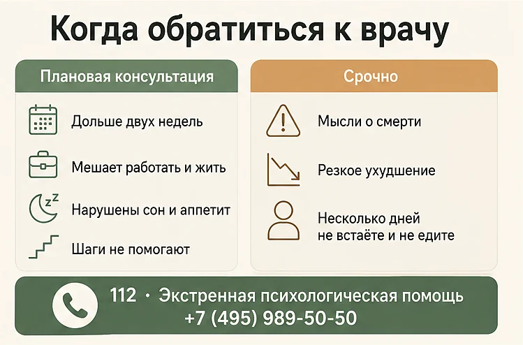
Частые вопросы
Как понять, что у меня депрессия, а не просто плохое настроение?
Плохое настроение меняется в течение дня и проходит за несколько дней, а радость от приятных событий сохраняется. При депрессии сниженное настроение или потеря интереса держатся почти каждый день большую часть дня не меньше двух недель, к ним добавляются нарушения сна, аппетита, концентрации и упадок сил, а привычные удовольствия перестают радовать. Ещё один надёжный признак — состояние заметно мешает работе, учёбе или отношениям. Поставить диагноз может только врач, но эти ориентиры помогают понять, что пора обратиться за помощью.
Сколько длится депрессия?
Депрессивный эпизод без лечения чаще всего длится от нескольких месяцев до полугода и дольше, а при лечении состояние обычно начинает улучшаться заметно раньше. Психотерапия обычно даёт первые сдвиги в течение нескольких недель, действие антидепрессантов врачи оценивают примерно через две-четыре недели после подбора дозы. Затягивать не стоит: чем дольше длится эпизод, тем труднее из него выходить и тем выше риск повторения.
Можно ли выйти из депрессии самостоятельно, без врача?
При лёгком снижении настроения иногда достаточно режима сна, движения, поддержки близких и постепенного возвращения к делам, которые раньше радовали. Но если состояние держится больше двух недель, мешает работать и жить или сопровождается мыслями о смерти, самостоятельных мер недостаточно — нужна помощь специалиста. Депрессия не лечится усилием воли: это не слабость характера, а состояние, при котором сами механизмы мотивации и удовольствия работают иначе.
Чем депрессия отличается от выгорания и апатии?
Выгорание связано прежде всего с работой: в отпуске и вне рабочего контекста человеку становится легче, а интерес к жизни в целом сохраняется. Апатия — это состояние без сил и желаний, которое может быть симптомом усталости, болезни или самой депрессии. При депрессии страдают все сферы сразу: настроение, интерес к любым занятиям, сон, аппетит, мышление и самооценка, и отдых сам по себе не помогает.
Помогают ли антидепрессанты и меняют ли они личность?
Антидепрессанты — это доказанный метод лечения умеренной и тяжёлой депрессии, который назначает врач; при лёгких формах чаще начинают с психотерапии. Они не меняют личность и не делают человека искусственно весёлым: их задача — вернуть способность спать, чувствовать и действовать, чтобы человек снова стал собой. Подбирать препарат, дозу и длительность может только врач, а резко бросать приём без его участия нельзя.
Что делать, если при депрессии нет сил даже встать с кровати?
Уменьшите шаг до предельно маленького: сесть в кровати, открыть шторы, выпить воды, умыться, выйти на балкон на пять минут. При депрессии силы приходят не до действия, а после него, поэтому ждать желания бесполезно — нужно опереться на минимальное движение. Если даже это не получается несколько дней подряд, это важный сигнал, что пора обратиться к врачу, и хорошо, если кто-то из близких поможет записаться.
Как помочь близкому человеку с депрессией?
Будьте рядом и говорите просто: «Я вижу, что тебе тяжело, я рядом» — вместо советов «соберись» и «займись делом». Помогайте конкретными действиями: предложить прогулку, приготовить еду, вместе найти врача и дойти до приёма. Не обесценивайте состояние и не спорьте с чувствами, а если человек говорит о нежелании жить — отнеситесь к этому серьёзно и не оставляйте его одного.
Депрессия у подростков — чем она отличается?
У подростков депрессия чаще проявляется не грустью, а раздражительностью, вспышками злости, замкнутостью, падением успеваемости и жалобами на боли в теле. Родителям это легко принять за «переходный возраст» или лень, поэтому важно смотреть на длительность и на то, изменился ли ребёнок в целом. Если сниженное настроение, замкнутость или раздражительность держатся больше двух недель, нужна консультация специалиста, а разговоры о смерти — повод действовать немедленно.
Может ли депрессия пройти сама?
Иногда депрессивный эпизод действительно проходит без лечения, но обычно это занимает месяцы тяжёлой жизни и повышает риск, что эпизод повторится. Лечение сокращает этот срок и учит распознавать ранние признаки следующего эпизода. Ждать «само пройдёт» особенно опасно, если состояние ухудшается или появляются мысли о смерти.
Правда ли, что депрессия — это лень или слабость характера?
Нет. По оценке Всемирной организации здравоохранения, депрессией страдают около 5,7% взрослых — примерно 332 миллиона человек в мире, включая сильных, успешных и внешне благополучных. При депрессии меняется работа систем мозга, отвечающих за мотивацию, удовольствие и энергию, поэтому «взять себя в руки» усилием воли не получается. Обращение за помощью — не слабость, а самый быстрый путь вернуть себе жизнь.
Читать также
- Осенняя депрессия: почему накрывает осенью и 8 способов справиться — если тяжесть приходит каждый год с наступлением тёмных месяцев.
- Апатия: почему нет сил и ничего не хочется — и что делать — если главное сейчас это безразличие и пустота.
- Эмоциональное выгорание: 5 стадий, признаки и как восстановиться — если тяжесть привязана в первую очередь к работе.
- Бессонница при тревоге: почему не спится и что делать — если сон разрушился первым.
- Как справиться с одиночеством: 8 шагов, когда рядом никого нет — если рядом некому рассказать о состоянии.
- Как справиться с тревогой: 8 техник, которые реально помогают — тревога и депрессия часто идут вместе.
- Токсичные отношения: 12 признаков и как из них выйти — если состояние ухудшается рядом с конкретным человеком.
- Как пережить смерть близкого человека: 9 шагов, которые помогают — если тяжесть началась после утраты: горе и депрессия переплетаются, но это не одно и то же.
Материал подготовлен командой AI Therapist и основан на доказательных подходах к работе с депрессией — когнитивно-поведенческой терапии (КПТ), поведенческой активации и терапии принятия и ответственности (ACT). Статья носит просветительский характер, не является медицинской рекомендацией и не заменяет диагностику и лечение у врача.
Источники: Всемирная организация здравоохранения — Depressive disorder (depression), NHS — Depression in adults.
Кто отвечает за содержание сайта и по каким правилам мы готовим материалы — на странице о проекте.